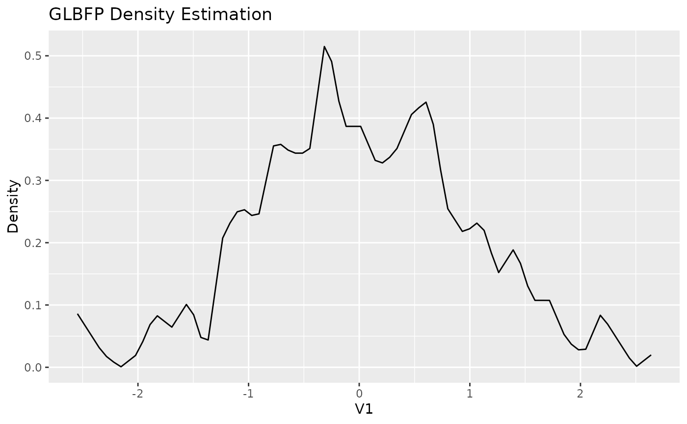
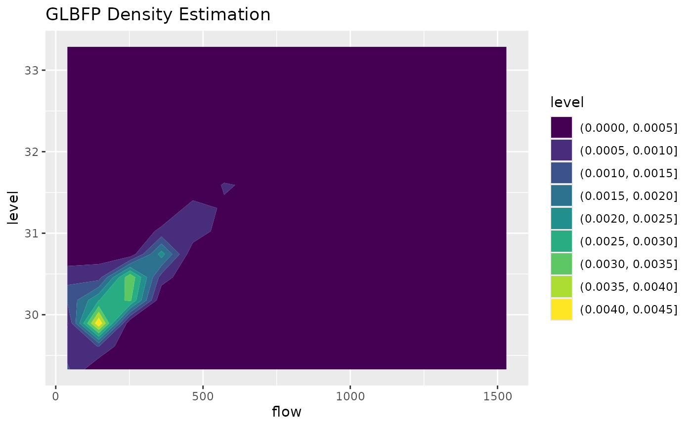

This vignette shows the basic workflow for pointwise and grid-based
density estimation with GLBFP.
Installation
install.packages("remotes")
remotes::install_github("AurelienNicosiaULaval/GLBFP")Estimate density at one point
The functions ASH(), LBFP(), and
GLBFP() estimate the density at a single point. The data
are supplied as a numeric matrix or data frame with observations in
rows.
x <- matrix(rnorm(300), ncol = 1)
b <- compute_bi_optim(x, m = 1)
fit <- GLBFP(x = 0, data = x, b = b, m = 1)
fit
#> GLBFP Density Estimation:
#> Point: (0)
#> Estimated density: 0.3867351
#> Estimated standard error: 0.0838592
#> 95% confidence interval: 0.362643259199835, 0.410826868862035
#> Bandwidths (b): 0.155144970240404
#> Shifts (m): 1The returned object contains the evaluation point, the estimated
density, the bandwidth, and the shift parameter. For LBFP()
and GLBFP(), uncertainty components are also returned.
Estimate density on a grid
The *_estimate() functions evaluate the same estimator
over a regular grid or a user-supplied set of points.
grid_fit <- GLBFP_estimate(data = x, b = b, m = 1, grid_size = 80)
head(cbind(grid_fit$grid, density = grid_fit$densities))
#> V1 density
#> [1,] -2.546881 0.085941125
#> [2,] -2.481241 0.067760688
#> [3,] -2.415601 0.049580251
#> [4,] -2.349960 0.031399814
#> [5,] -2.284320 0.017352329
#> [6,] -2.218680 0.008262111For one-dimensional grids, the plot method returns a
ggplot2 object.
plot(grid_fit)
Using the included data
The ashua data contain daily flow and level observations
for the Ashuapmushuan river. The example below uses a small grid so the
vignette remains fast.
data("ashua")
river_data <- ashua[, c("flow", "level")]
b2 <- c(8, 0.4)
x0 <- c(mean(river_data$flow), mean(river_data$level))
fit2 <- GLBFP(x = x0, data = river_data, b = b2, m = c(1, 1))
fit2
#> GLBFP Density Estimation:
#> Point: (249.022601959444, 30.4196864889496)
#> Estimated density: 0.003774417
#> Estimated standard error: 0.0003167353
#> 95% confidence interval: 0.00376917856755285, 0.00377965508177405
#> Bandwidths (b): 8, 0.4
#> Shifts (m): 1, 1
grid_fit2 <- GLBFP_estimate(
data = river_data,
b = b2,
m = c(1, 1),
grid_size = 15
)
plot(grid_fit2, contour = TRUE)